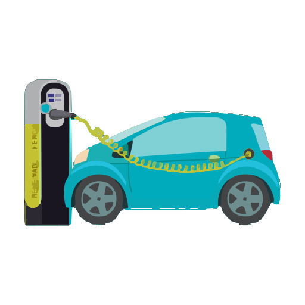
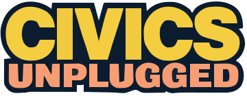
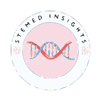
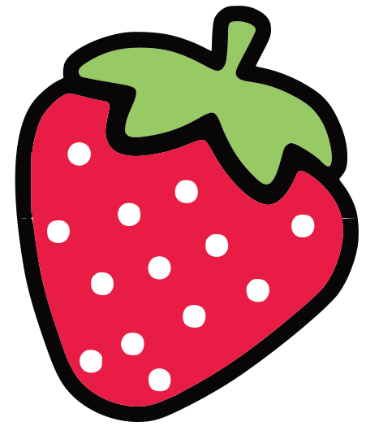
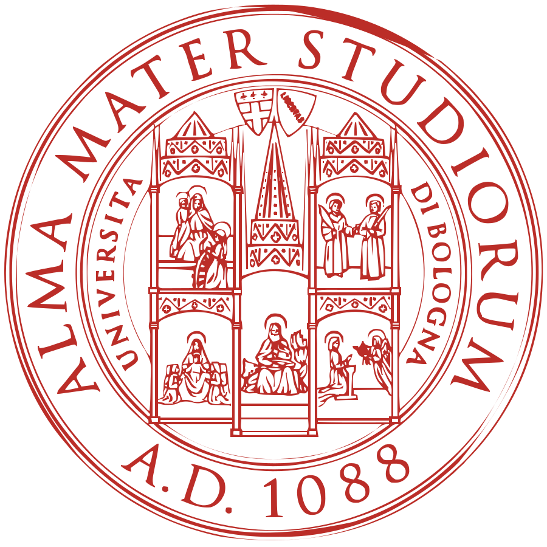
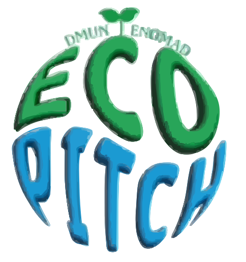

Esha Ahmed
Ciao a Tutti! I'm Esha, a girl from Italy. I'm currently pursuing my education at a STEM
high school on Chemistry field. I am excited to share my knowledge and experiences with you,
let's embark on this learning journey together!
Feel free to email me at esha.ahmed.1909  gmail
gmail  com or reach out on the social media platforms linked at
the bottom. Keep scrolling to learn more about me!
com or reach out on the social media platforms linked at
the bottom. Keep scrolling to learn more about me!

SustainEV @ SustainEV  Dec 2024—Present
At SustainEV, we are a non-profit organization dedicated to raising awareness about sustainable solutions for lithium mining and battery recycling. Our mission is to educate communities, businesses, and policymakers on the environmental and social challenges of the EV industry while promoting responsible practices. Through awareness campaigns, workshops, and partnerships, we empower individuals to drive change toward a cleaner, greener, and more equitable future. Join us in making sustainable energy a reality for everyone.

Civics Unplugged Fellow Fall 2024 @ Civics Unplugged  Sep 2024—Nov 2024
The Civic Innovators Fellowship is an 8-week-intensive civic leadership program that prepares hundreds of civic-minded high school students each year with the knowledge and skills to produce novel solutions to well-defined community and societal problems. Over the course of the program, Fellows examine the most vexing problems facing the U.S. and the world and create solutions that bridge foundational principles with emerging technology and new schools of thought. They will also have the option to learn the fundamentals of personal development, systems thinking, democratic theory, and community building.
Mentor @ STEMed Insights  Aug 2024—Sep 2024
With STEMed Insights Bootcamp, as a mentor, I have had the privilege of guiding young, bright, innovative minds in business pitches that offer solutions to real problems. The following 21st-century technologies were deliberated upon in workshops: AI, biotech, FinTech, and environmental science, inclusive of space and health tech. I helped them bridge gaps between STEM topics and business strategies. It has been a rewarding feeling knowing that I have facilitated collaboration, creativity, and critical thinking in empowering the next generation of leaders to apply these skills toward meaningful outcomes. As a STEMed Insights Bootcamp mentor, I led a workshop focused on water aquifers, exploring their critical role in global water resources and sustainability. I got the participants through the science behind aquifer systems, environmental effects they have, and challenges associated with the management of groundwater.
UWC Short Course: Building a Sustainable Future @ UWC Robert Bosch College July 2024
The UWC short course "Building a Sustainable Future" was about exploring sustainability from different angles, including economic, environmental, and social aspects. It aimed to help young people understand the complex challenges of sustainability. The course included various activities like self-led projects, interactive workshops, debates, reflections, and talks by guest speakers. Participants were encouraged to think critically about sustainability, imagine a sustainable future, and contribute to making it a reality.
Internship @ CREA-Council for Agricultural Research and Analysis of Agricultural Economics  May 2024—June 2024
During my internship at CREA, I gained hands-on experience in horticulture and biotechnology. I participated in strawberry crossbreeding, learned micropropagation techniques, and conducted PCR analysis on fruit samples. In the field, I studied pear tree growth and measured rootstocks for a European project. I also investigated cherry cracking and measured sugar levels in different varieties. This experience deepened my understanding of agricultural practices and scientific research, preparing me for future roles in sustainable agriculture and biotechnology.
The infinitely small: changes in properties when changing the size of materials @ Alma Mater Studiorum - University of Bologna  Feb 2024
I attended a seminar and a laboratory on nanoparticles. During the seminar, I learned fundamental concepts about nanoparticles, their properties and their applications in various sectors, while in the laboratory I had the opportunity to carry out practical experiments and deepen my understanding through direct experience.
Blue Nights EU Researchers’ Night @ University Ca' Foscari of Venice  Sep 2023
Sep 2023
Participated in the Venice EU Researcher Night, a captivating event where I had the opportunity to engage with cutting-edge projects and connect with inspiring researchers. Explored the fascinating world of science, technology, and innovation, fostering my commitment to staying at the forefront of advancements in my field. Grateful for the chance to network, share ideas, and contribute to the vibrant research community. Excited to bring newfound insights and enthusiasm to my ongoing academic and professional journey
Coding Class @ Girls Who Code  Oct 2023—Dec 2023
Oct 2023—Dec 2023
How to start coding with Web Development using HTML, CSS, and JavaScript. Using Python for the first time on Data Science was very interesting. And lastly Cyberecurity was really fun, like cracking code.
Summer Course @ Oxford Summer Course Jun 2023—Jul 2023
I assisted with Oxford Summer Courses classes about Chemistry where I studied various things. From Green Chemistry to Spectroscopy, AI in Chemistry, to Chemistry in Space. Immersed myself in the world of Chemistry during my time at Oxford Summer Courses. Explored the intricacies of the subject through engaging seminars, collaborative projects, and hands-on experiences. This enriching program not only deepened my understanding of Chemistry but also cultivated essential skills for academic and professional success.
Solar Panel Prompt in South Korean Schools @ EcoPITCH  Sep 2024
I had the privilege of being selected as one of 16 participants to present my sustainability project at EcoPITCH 2024, an innovative hackathon organized by DMUN and Enomad. This unique initiative blends the collaborative spirit of Model United Nations, the creativity of entrepreneurial competitions, and a focus on climate solutions. EcoPITCH empowers participants to develop actionable ideas to address environmental challenges, with a special focus on advancing Enomad’s NetZero@Schools program in South Korea.
As part of EcoPITCH 2024, I developed a project focused on optimizing solar panel installations for schools in South Korea. The goal was to reduce energy costs and promote sustainability by incorporating high-efficiency monocrystalline solar panels, AI-driven energy management, and educational integration. My solution addresses the unique challenges schools face, such as high initial costs and outdated infrastructure, while offering long-term savings and environmental benefits. This project aims to serve as a model for renewable energy adoption not only in Korea but worldwide.
Shape the Future Challenge | Food @ Moonshot Pirates Dec 2024
I had the privilege of joining the Shape the Future Challenge (1100+ partecipants) to tackle one of the most pressing issues of our time, building a healthier and more sustainable food system. In the Shape the Future Challenge, young minds are empowered to tackle pressing global issues through innovative thinking and collaborative problem-solving. Participants gain invaluable hands-on experience in project management, design thinking, and sustainability practices. By working closely with experienced mentors and diverse teams, these future leaders develop durable skills and mindsets to become proactive changemakers who are ready to make a positive impact on the world.
With the support of expert mentors, tools, and keynotes, my team and I ventured beyond conventional ideas to create Young Minds, a project designed to revolutionize the way teenagers experience plant-based food. Our goal was to break the stigma surrounding healthy alternatives and turn them into trendy, mood-boosting, and personalized food experiences.


Copyright © 2024 Esha Ahmed. All rights reserved.